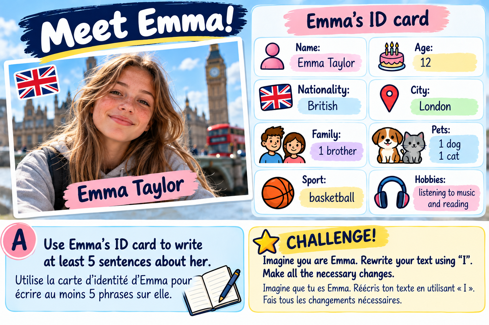

Lesson B
BE / HAVE · Simple present · Reformulation
Exercises 1–3: 10 questions are selected randomly from a pool of 30. Correction is immediate and you can try again.
Exercise 1 — BE or HAVE?
Complete with the correct form of BE or HAVE.
Complète avec la forme correcte de BE ou HAVE.
Rewrite in the negative form:
My sister has long brown hair. / He has a dog.
Réécris les deux phrases à la forme négative.
Exercise 2 — The simple present
Complete with the correct form of the verb. Some sentences are negative!
Complète avec la forme correcte du verbe. Certaines phrases sont à la forme négative !
Rewrite with My best friend: My friends play football. / The students don't live in London.
Fais tous les changements nécessaires.
Exercise 3 — Reformulation
Rewrite with the new subject. Make all the necessary changes.
Réécris avec le nouveau sujet. Fais tous les changements nécessaires.
Make this sentence negative: Jack lives in Nevers.
Mets la phrase à la forme négative.
Exercise 4 — Meet Emma!

Use Emma's ID card to write at least 5 sentences about her.
Utilise la carte d'identité d'Emma pour écrire au moins 5 phrases sur elle.
Imagine you are Emma. Rewrite your text using I. Make all the necessary changes.
Imagine que tu es Emma. Réécris ton texte en utilisant « I ». Fais tous les changements nécessaires.